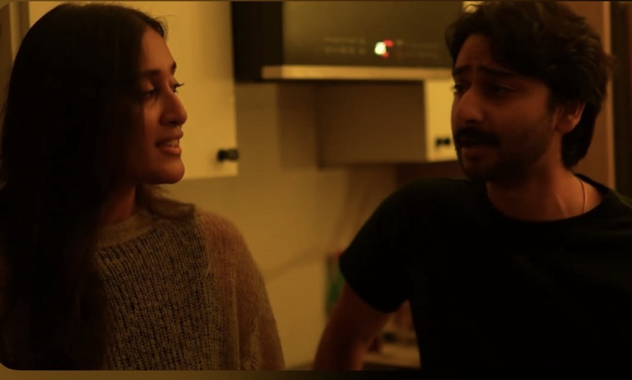
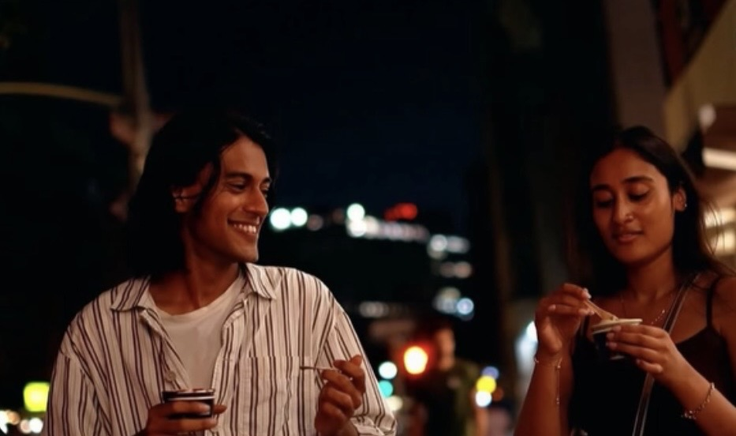

Short Film · Lead
Departures
After leaving a high-paying tech job to become a writer, Rohit must confront the weight of that choice at his best friend Sam's birthday. Raagini plays Smriti, one of Rohit's closest friends.
Film & Reels
Raagini's Film and TV experience, featuring current on-camera work, set experience, and an openness to new collaborations and screen opportunities.
Screen Work

Short Film · Lead
After leaving a high-paying tech job to become a writer, Rohit must confront the weight of that choice at his best friend Sam's birthday. Raagini plays Smriti, one of Rohit's closest friends.

Short Film · Lead
When a young man feels invisible in his own life, he finds himself drawn to Kavya, his childhood friend from India. Her birthday invitation gives him hope, until the evening takes an unexpected turn.
Short Film · Lead
A character-led short following a girl who is constantly late to life and exhausted by the pressure to keep up with shifting trends and rules.
Additional Credits
Short Film · Supporting
Anya's cousin from a Pakistani family, an architecture student navigating school, family, and a smoking addiction.
Television · Background
Professional streaming television set experience.
Television · Background
Background performance supporting a lived-in screen world.
Upcoming
Short Film · Lead
Raagini plays Aditi, a young woman facing the impending loss of her mother to cancer as she attempts to cook her mother's dal.
Demo Reel
Raagini is currently preparing updated reel material to showcase her current screen work.